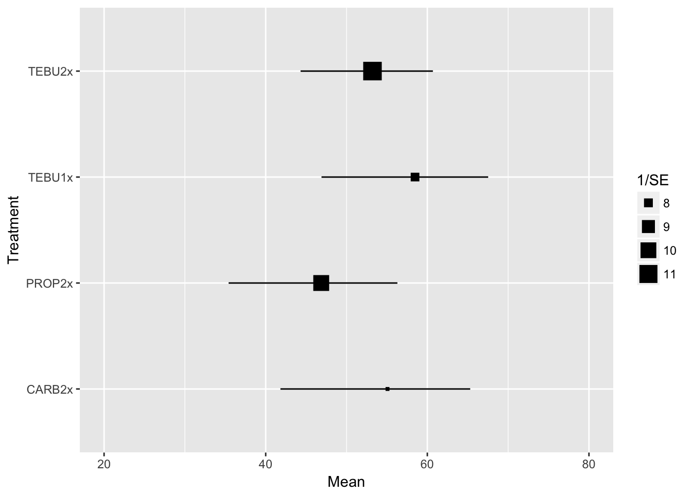

Introduction
We conducted a two-stage multi-treatment or network meta-analysis for the simultaneous analysis of all treatments of interest and which co-occur in the same trial. This approach allows direct comparisons of treatments with each other, and takes into account all the correlations (see Madden et al. 2016 for more details).
The most common form of effect size used in traditional meta-analysis are based on the contrasts of the treatment of interest with a common reference (e.g. control treatment), such as mean difference, response ratio, etc. This is known as the conditional modeling approach, also named contrast-based meta-analysis. An alternative and simpler approach, which is commonly used in plant pathology, is to fit a two-way linear mixed model directly to the treatment means. This is know as the unconditional modeling approach or arm-based meta-analysis.
Import data
Let’s first import the data and load the packages needed for the analyses.
fhb_sev <- read.csv("fhb_sev.csv", sep = ",", h = T)
fhb_yield <- read.csv("fhb_yield.csv", sep = ",", h = T)# Load packages
library(tidyverse)
library(metafor)
library(ggthemes)
library(cowplot)
library(scales)
library(knitr)
library(nloptr)
library(minqa)
library(DT)Effect-sizes
Here, we used the latter approach fitted directly to the log of the means (for both FHB index and yield) for further obtaining the relative effect (control efficacy and yield response). For yield, we fitted the model directly to the mean yield of treatments to further estimate the yield response, or the difference (D) from using the fungicides. The D was calculated for each treatment within a study for plotting purposes, but the meta-analyitic estimate of D was obtained from the difference of the estimates by mixed model fitted directly to the treatment means.
# log of FHB index
fhb_sev$yi <- log(fhb_sev$sev)
hist(fhb_sev$yi)
# log of yield
fhb_yield$yi <- log(fhb_yield$yield)
hist(fhb_yield$yi)
# difference (D) in yield between treatment and non-treated check
fhb_yield$D <-fhb_yield$yield - fhb_yield$yield_check
hist(fhb_yield$D)
Sampling variance
Let’s create the sampling variance variables vi for the respective effect-sizes.
# Sampling variance for the log of FHB index
fhb_sev$vi <- with(fhb_sev, V_sev / (n * sev^2))
# Sampling variance for the log of yield
fhb_yield$vi <- with(fhb_yield, V_yield / (n * yield^2))
# Sampling variance for yield
fhb_yield$vi2 <- fhb_yield$V_yield/fhb_yield$n # multivariate approachTreatments
There are tree fungicides of interest in this study:
- Tebuconazole
- Propiconazole
- Carbendazim
Most of them were used as a single application but Tebuconazole was tested as single or sequential application. Let’s get the number of entries per fungicide. The AACHECK refers to the plots where no fungicide was applied, or the control.
table(fhb_sev$AI, fhb_sev$n_spray2)##
## 0 1 2
## AACHECK 35 0 0
## CARB 0 3 29
## PROP 0 0 27
## TEBU 0 23 22Let’s create another variable to identify each of these four treatments. We will omit CARB applied once because there are only three entries.
library(tidyverse)
fhb_sev <- fhb_sev %>%
mutate(AI_nspray2 = paste(AI, n_spray2,sep='_')) %>%
filter(AI_nspray2 != "CARB_1") %>%
filter(trial, length(trial)>1)
fhb_yield <- fhb_yield %>%
mutate(AI_nspray2 = paste(AI, n_spray2,sep='_')) %>%
filter(AI_nspray2 != "CARB_1") %>%
filter(trial, length(trial)>1) Finally, we create a unique identifier for the treatment within a trial. This can be used further as random effects in the model.
# ID variable for each entry within a trial
fhb_sev$id <- 1:nrow(fhb_sev)
fhb_yield$id <- 1:nrow(fhb_yield)Descriptive analysis
We will get some summary information which may of use to describe the dataset when writing the material and methods and results section of the paper.
# Number of entries by fungicide and number of sprays
table(fhb_yield$AI, fhb_yield$n_spray2)##
## 0 1 2
## AACHECK 48 0 0
## CARB 0 0 41
## PROP 0 0 27
## TEBU 0 38 34# Number of unique trials
length(unique(fhb_yield$trial))## [1] 48# Number of unique studies
length(unique(fhb_yield$study))## [1] 15# Number of trials by year
fhb_trial <- fhb_yield %>%
group_by(trial) %>%
filter(row_number() ==1)
data.frame(table(fhb_trial$year))nrow(table(fhb_trial$year))## [1] 10# Number of trial by location
data.frame(table(fhb_trial$location))# Number of trials by publication type
data.frame(table(fhb_trial$publication))# Number of trials by state
data.frame(table(fhb_trial$state))# n. of entries with D value lower than zero
negat_D <- fhb_yield %>%
filter(D < 0)We also want to check whether the difference in means (D) can be expressed in absolute rather than relative terms. The former is indicated for situations in which the coefficient of variation for the response variable in the check treatment is not too high (Paul et al. 2008)
We can see that CV was high for FHB index, but much lower for yield. It is safer then to work with the absolute means difference for yield than FHB index, which will also require log-transformation.
Meta-analysis
Control efficacy
Let’s fit an arm-based model using the rma.mv function of metafor to get the estimates for each treatment.
fhb_mv_AI <- rma.mv(yi, vi,
mods = ~ AI_nspray2,
method="ML",
random = list(~ AI_nspray2 | trial, ~1 | id),
struct="UN", data=fhb_sev)Let’s see the summary ouput provided by this function. Note that the intercept is the control treatment and all treatments differed significantly from the control based on the very low P-values.
fhb_mv_AI##
## Multivariate Meta-Analysis Model (k = 136; method: ML)
##
## Variance Components:
##
## estim sqrt nlvls fixed factor
## sigma^2 0.0059 0.0766 136 no id
##
## outer factor: trial (nlvls = 35)
## inner factor: AI_nspray2 (nlvls = 5)
##
## estim sqrt k.lvl fixed level
## tau^2.1 1.7461 1.3214 35 no AACHECK_0
## tau^2.2 1.4947 1.2226 29 no CARB_2
## tau^2.3 1.7639 1.3281 27 no PROP_2
## tau^2.4 2.2428 1.4976 23 no TEBU_1
## tau^2.5 1.8756 1.3695 22 no TEBU_2
##
## rho.AACH rho.CARB rho.PROP rho.TEBU_1 rho.TEBU_2 AACH
## AACHECK_0 1 0.8786 0.9325 0.9526 0.9597 -
## CARB_2 0.8786 1 0.9767 0.0000 0.9556 21
## PROP_2 0.9325 0.9767 1 0.0000 0.9952 26
## TEBU_1 0.9526 0.0000 0.0000 1 0.9997 9
## TEBU_2 0.9597 0.9556 0.9952 0.9997 1 13
## CARB PROP TEBU_1 TEBU_2
## AACHECK_0 no no no no
## CARB_2 - no yes no
## PROP_2 21 - yes no
## TEBU_1 0 0 - no
## TEBU_2 8 11 2 -
##
## Test for Residual Heterogeneity:
## QE(df = 131) = 47330.3777, p-val < .0001
##
## Test of Moderators (coefficient(s) 2,3,4,5):
## QM(df = 4) = 87.2446, p-val < .0001
##
## Model Results:
##
## estimate se zval pval ci.lb ci.ub
## intrcpt 2.1735 0.2247 9.6727 <.0001 1.7331 2.6139 ***
## AI_nspray2CARB_2 -0.8001 0.1319 -6.0675 <.0001 -1.0586 -0.5417 ***
## AI_nspray2PROP_2 -0.6324 0.0996 -6.3469 <.0001 -0.8277 -0.4371 ***
## AI_nspray2TEBU_1 -0.8790 0.1254 -7.0070 <.0001 -1.1248 -0.6331 ***
## AI_nspray2TEBU_2 -0.7596 0.0888 -8.5508 <.0001 -0.9337 -0.5855 ***
##
## ---
## Signif. codes: 0 '***' 0.001 '**' 0.01 '*' 0.05 '.' 0.1 ' ' 1We can set linear contrasts between treatments of interest and get the P-valued using the anova function.
anova(fhb_mv_AI, L=rbind(c(0,1,-1,0,0),
c(0,0,-1,1,0),
c(0,0,-1,0,1),
c(0,0,0,-1,1))) ##
## Hypotheses:
## 1: AI_nspray2CARB_2 - AI_nspray2PROP_2 = 0
## 2: -AI_nspray2PROP_2 + AI_nspray2TEBU_1 = 0
## 3: -AI_nspray2PROP_2 + AI_nspray2TEBU_2 = 0
## 4: -AI_nspray2TEBU_1 + AI_nspray2TEBU_2 = 0
##
## Results:
## estimate se zval pval
## 1: -0.1677 0.0852 -1.9675 0.0491
## 2: -0.2466 0.1315 -1.8755 0.0607
## 3: -0.1271 0.0752 -1.6907 0.0909
## 4: 0.1194 0.1100 1.0860 0.2775Let’s back-transform (exponential) the estimated mean (and respective 95%CIs) difference of the logs to obtain the response ratio, which is further expressed as percent reduction in FHB index relative to the check treatment (control efficacy) for each fungicide. We then prepare the data for plotting purposes.
results_AI <- data.frame(cbind((1-exp(fhb_mv_AI$b))*100,
(1-exp(fhb_mv_AI$ci.lb))*100,
(1-exp(fhb_mv_AI$ci.ub))*100))
treat <- c("Check", "CARB2x", "PROP2x", "TEBU1x", "TEBU2x")
efficacy <- tbl_df(results_AI)
efficacy$treat <- treat
efficacy$se <- fhb_mv_AI$se
colnames(efficacy) <- c("Mean", "CIsup", "CIinf", "Treatment", "SE")
efficacyWe can visualize this quickly, but we omit the check treatment.
efficacy %>%
filter(Treatment != "Check") %>%
ggplot(aes(Treatment, Mean))+
geom_point(aes(size=1/SE), shape=15)+
geom_linerange(aes(ymin = CIinf, ymax = CIsup))+
coord_flip()+
theme_grey()+
ylim(20,80)
Inconsistency: index
In a network meta-analysis, it is important to check whether the results are consistent across the different designs. We included this variable manually in the original dataset and tested the interaction effect of treatments and design group.
Moderators
FHB index base
# create the binary variable (dis_press)
fhb_sev$dis_press <- ifelse(as.numeric(fhb_sev$sev_check) >7.0, 2, 1)
# summarize number of trials per category of dis_press
table(fhb_sev$AI_nspray2, fhb_sev$dis_press)##
## 1 2
## AACHECK_0 17 18
## CARB_2 19 10
## PROP_2 15 12
## TEBU_1 4 19
## TEBU_2 10 12# Test effect of moderator
fhb_mv_AI_sev_check <- rma.mv(yi, vi,
mods = ~ AI_nspray2*factor(dis_press),
method="ML",
random = list(~ AI_nspray2 | trial, ~1 | id),
struct="UN",
data=fhb_sev)
# Contrast levels of moderators
anova(fhb_mv_AI_sev_check,btt=7:10)##
## Test of Moderators (coefficient(s) 7,8,9,10):
## QM(df = 4) = 6.5407, p-val = 0.1622Yield base
# create binary variable (yield_class)
summary(fhb_sev$yield_check) # Median = 2993; Mean = 2915## Min. 1st Qu. Median Mean 3rd Qu. Max.
## 67.33 2673.00 3085.00 3012.00 3610.00 4984.00fhb_sev$yield_class <- ifelse(fhb_sev$yield_check > 3000, 2, 1)
# check number of trials per yield_class category
table(fhb_sev$yield_class, fhb_sev$AI_nspray2)##
## AACHECK_0 CARB_2 PROP_2 TEBU_1 TEBU_2
## 1 16 10 12 11 10
## 2 19 19 15 12 12# test the effect of moderator
fhb_mv_AI_yield_class <- rma.mv(yi, vi,
mods = ~ AI_nspray2*factor(yield_class),
method="ML",
random = list(~ AI_nspray2 | trial, ~1 | id),
struct="UN",
data=fhb_sev)
anova(fhb_mv_AI_yield_class, btt=7:10) ##
## Test of Moderators (coefficient(s) 7,8,9,10):
## QM(df = 4) = 5.5750, p-val = 0.2332Year as continuous
# Moderator year (continuous)
# Number of entries by fungicide and year
table(fhb_sev$AI_nspray2, fhb_sev$year)##
## 2000 2004 2005 2007 2010 2011 2012 2013 2014
## AACHECK_0 4 1 1 1 1 7 6 9 5
## CARB_2 0 0 0 0 0 7 5 16 1
## PROP_2 0 0 0 0 0 7 6 8 6
## TEBU_1 16 3 1 1 1 0 0 1 0
## TEBU_2 4 0 0 0 0 14 0 0 4fhb_mv_AI_year <- rma.mv(yi, vi,
mods = ~ AI_nspray2*as.numeric(year),
method="ML",
random =list(~ AI_nspray2 | trial, ~1 | id),
struct="UN",
data=fhb_sev)
anova(fhb_mv_AI_year, btt=7:10)##
## Test of Moderators (coefficient(s) 7,8,9,10):
## QM(df = 4) = 6.8229, p-val = 0.1456Yield response: relative
### AI_nspray2 (AI and number of sprays)
fhb_mv_AI <- rma.mv(yi, vi,
mods = ~ AI_nspray2,
method="ML",random = list(~ AI_nspray2 | trial, ~1 | id),
struct="UN", data=fhb_yield)## Warning in rma.mv(yi, vi, mods = ~AI_nspray2, method = "ML", random =
## list(~AI_nspray2 | : Some combinations of the levels of the inner factor
## never occurred. Corresponding 'rho' value(s) fixed to 0.summary(fhb_mv_AI)##
## Multivariate Meta-Analysis Model (k = 188; method: ML)
##
## logLik Deviance AIC BIC AICc
## 138.7104 596.6813 -237.4208 -172.6920 -232.3909
##
## Variance Components:
##
## estim sqrt nlvls fixed factor
## sigma^2 0.0000 0.0024 188 no id
##
## outer factor: trial (nlvls = 48)
## inner factor: AI_nspray2 (nlvls = 5)
##
## estim sqrt k.lvl fixed level
## tau^2.1 0.3782 0.6149 48 no AACHECK_0
## tau^2.2 0.4160 0.6450 41 no CARB_2
## tau^2.3 0.3533 0.5944 27 no PROP_2
## tau^2.4 0.2844 0.5333 38 no TEBU_1
## tau^2.5 0.2987 0.5465 34 no TEBU_2
##
## rho.AACH rho.CARB rho.PROP rho.TEBU_1 rho.TEBU_2 AACH
## AACHECK_0 1 0.9914 0.9890 0.9861 0.9805 -
## CARB_2 0.9914 1 0.9990 0.9993 0.9975 33
## PROP_2 0.9890 0.9990 1 0.0000 0.9985 26
## TEBU_1 0.9861 0.9993 0.0000 1 0.9991 22
## TEBU_2 0.9805 0.9975 0.9985 0.9991 1 25
## CARB PROP TEBU_1 TEBU_2
## AACHECK_0 no no no no
## CARB_2 - no no no
## PROP_2 21 - yes no
## TEBU_1 12 0 - no
## TEBU_2 20 11 14 -
##
## Test for Residual Heterogeneity:
## QE(df = 183) = 14956.8086, p-val < .0001
##
## Test of Moderators (coefficient(s) 2,3,4,5):
## QM(df = 4) = 84.8828, p-val < .0001
##
## Model Results:
##
## estimate se zval pval ci.lb ci.ub
## intrcpt 7.9375 0.0891 89.0957 <.0001 7.7629 8.1121 ***
## AI_nspray2CARB_2 0.1202 0.0159 7.5520 <.0001 0.0890 0.1514 ***
## AI_nspray2PROP_2 0.1482 0.0173 8.5882 <.0001 0.1144 0.1820 ***
## AI_nspray2TEBU_1 0.1599 0.0216 7.3904 <.0001 0.1175 0.2023 ***
## AI_nspray2TEBU_2 0.1758 0.0222 7.9333 <.0001 0.1324 0.2193 ***
##
## ---
## Signif. codes: 0 '***' 0.001 '**' 0.01 '*' 0.05 '.' 0.1 ' ' 1results_I<- data.frame(cbind((exp(fhb_mv_AI$b)-1)*100,
(exp(fhb_mv_AI$ci.lb)-1)*100,
(exp(fhb_mv_AI$ci.ub)-1)*100))
results_I# Linear contrasts between treatments
anova(fhb_mv_AI, L=rbind(c(0,1,-1,0,0),
c(0,0,1,-1,0),
c(0,0,1,0,-1),
c(0,0,0,-1,1))) ##
## Hypotheses:
## 1: AI_nspray2CARB_2 - AI_nspray2PROP_2 = 0
## 2: AI_nspray2PROP_2 - AI_nspray2TEBU_1 = 0
## 3: AI_nspray2PROP_2 - AI_nspray2TEBU_2 = 0
## 4: -AI_nspray2TEBU_1 + AI_nspray2TEBU_2 = 0
##
## Results:
## estimate se zval pval
## 1: -0.0280 0.0131 -2.1298 0.0332
## 2: -0.0117 0.0168 -0.6965 0.4861
## 3: -0.0277 0.0135 -2.0509 0.0403
## 4: 0.0159 0.0125 1.2783 0.2011Yield response: absolute
### by fungicide treatment
fhb_mv_AI_D <- rma.mv(yield, vi2,
mods = ~ AI_nspray2,
method="ML",random = list(~ AI_nspray2 | trial, ~1 | id), struct="UN",
data=fhb_yield,
control = list(optimizer="nlm"))## Warning in rma.mv(yield, vi2, mods = ~AI_nspray2, method = "ML", random =
## list(~AI_nspray2 | : Some combinations of the levels of the inner factor
## never occurred. Corresponding 'rho' value(s) fixed to 0.summary(fhb_mv_AI_D)##
## Multivariate Meta-Analysis Model (k = 188; method: ML)
##
## logLik Deviance AIC BIC AICc
## -1363.9516 564.5622 2767.9032 2832.6320 2772.9331
##
## Variance Components:
##
## estim sqrt nlvls fixed factor
## sigma^2 0.0000 0.0000 188 no id
##
## outer factor: trial (nlvls = 48)
## inner factor: AI_nspray2 (nlvls = 5)
##
## estim sqrt k.lvl fixed level
## tau^2.1 1172821.1556 1082.9687 48 no AACHECK_0
## tau^2.2 1649776.5517 1284.4363 41 no CARB_2
## tau^2.3 1513922.4058 1230.4155 27 no PROP_2
## tau^2.4 1298155.3558 1139.3662 38 no TEBU_1
## tau^2.5 1377800.2849 1173.7974 34 no TEBU_2
##
## rho.AACH rho.CARB rho.PROP rho.TEBU_1 rho.TEBU_2 AACH
## AACHECK_0 1 0.9595 0.9533 0.9404 0.9168 -
## CARB_2 0.9595 1 0.9984 0.9975 0.9919 33
## PROP_2 0.9533 0.9984 1 0.0000 0.9938 26
## TEBU_1 0.9404 0.9975 0.0000 1 0.9971 22
## TEBU_2 0.9168 0.9919 0.9938 0.9971 1 25
## CARB PROP TEBU_1 TEBU_2
## AACHECK_0 no no no no
## CARB_2 - no no no
## PROP_2 21 - yes no
## TEBU_1 12 0 - no
## TEBU_2 20 11 14 -
##
## Test for Residual Heterogeneity:
## QE(df = 183) = 42895.4678, p-val < .0001
##
## Test of Moderators (coefficient(s) 2,3,4,5):
## QM(df = 4) = 63.1327, p-val < .0001
##
## Model Results:
##
## estimate se zval pval ci.lb
## intrcpt 3140.0622 157.6673 19.9158 <.0001 2831.0400
## AI_nspray2CARB_2 455.7985 64.5791 7.0580 <.0001 329.2257
## AI_nspray2PROP_2 497.2890 64.7478 7.6804 <.0001 370.3856
## AI_nspray2TEBU_1 456.6366 69.1584 6.6028 <.0001 321.0886
## AI_nspray2TEBU_2 558.3048 76.4817 7.2998 <.0001 408.4034
## ci.ub
## intrcpt 3449.0843 ***
## AI_nspray2CARB_2 582.3713 ***
## AI_nspray2PROP_2 624.1924 ***
## AI_nspray2TEBU_1 592.1845 ***
## AI_nspray2TEBU_2 708.2062 ***
##
## ---
## Signif. codes: 0 '***' 0.001 '**' 0.01 '*' 0.05 '.' 0.1 ' ' 1# Linear contrasts between treatments
anova(fhb_mv_AI_D, L=rbind(c(0,1,-1,0,0),
c(0,0,1,-1,0),
c(0,0,1,0,-1),
c(0,0,0,-1,1)))##
## Hypotheses:
## 1: AI_nspray2CARB_2 - AI_nspray2PROP_2 = 0
## 2: AI_nspray2PROP_2 - AI_nspray2TEBU_1 = 0
## 3: AI_nspray2PROP_2 - AI_nspray2TEBU_2 = 0
## 4: -AI_nspray2TEBU_1 + AI_nspray2TEBU_2 = 0
##
## Results:
## estimate se zval pval
## 1: -41.4905 34.4974 -1.2027 0.2291
## 2: 40.6524 53.9755 0.7532 0.4514
## 3: -61.0158 41.7599 -1.4611 0.1440
## 4: 101.6683 48.2911 2.1053 0.0353Inconsistency
### Groups were inclued directly in the spreadsheet
table(fhb_yield$cons_group)##
## 2 3 4 5 6 7 8 9
## 48 47 39 30 10 5 6 3### Model
fhb_mv_AI_cons <- rma.mv(yield, vi2,
mods = ~ AI_nspray2 * cons_group,
method="ML",
random = ~ AI_nspray2 | trial/cons_group,
struct="UN", data=fhb_yield)
summary(fhb_mv_AI_cons)##
## Multivariate Meta-Analysis Model (k = 188; method: ML)
##
## logLik Deviance AIC BIC AICc
## -1522.6343 881.9277 3071.2686 3113.3424 3073.3606
##
## Variance Components:
##
## estim sqrt nlvls fixed
## sigma^2.1 0.0026 0.0513 5 no
## sigma^2.2 610131.6560 781.1092 154 no
## sigma^2.3 610135.6411 781.1118 154 no
## factor
## sigma^2.1 AI_nspray2
## sigma^2.2 AI_nspray2/trial
## sigma^2.3 AI_nspray2/trial/cons_group
##
## Test for Residual Heterogeneity:
## QE(df = 178) = 31025.5225, p-val < .0001
##
## Test of Moderators (coefficient(s) 2,3,4,5,6,7,8,9,10):
## QM(df = 9) = 45.6361, p-val < .0001
##
## Model Results:
##
## estimate se zval pval
## intrcpt 4207.4600 387.1908 10.8666 <.0001
## AI_nspray2CARB_2 1117.6093 847.0772 1.3194 0.1870
## AI_nspray2PROP_2 -180.3983 674.6374 -0.2674 0.7892
## AI_nspray2TEBU_1 825.6867 682.4619 1.2099 0.2263
## AI_nspray2TEBU_2 783.8948 596.5568 1.3140 0.1888
## cons_group -279.0646 90.7879 -3.0738 0.0021
## AI_nspray2CARB_2:cons_group -233.8480 268.4444 -0.8711 0.3837
## AI_nspray2PROP_2:cons_group 99.0119 150.4594 0.6581 0.5105
## AI_nspray2TEBU_1:cons_group -10.0297 172.6707 -0.0581 0.9537
## AI_nspray2TEBU_2:cons_group 35.6920 139.6539 0.2556 0.7983
## ci.lb ci.ub
## intrcpt 3448.5800 4966.3401 ***
## AI_nspray2CARB_2 -542.6315 2777.8501
## AI_nspray2PROP_2 -1502.6632 1141.8667
## AI_nspray2TEBU_1 -511.9142 2163.2875
## AI_nspray2TEBU_2 -385.3350 1953.1246
## cons_group -457.0055 -101.1236 **
## AI_nspray2CARB_2:cons_group -759.9894 292.2935
## AI_nspray2PROP_2:cons_group -195.8831 393.9069
## AI_nspray2TEBU_1:cons_group -348.4580 328.3986
## AI_nspray2TEBU_2:cons_group -238.0246 309.4086
##
## ---
## Signif. codes: 0 '***' 0.001 '**' 0.01 '*' 0.05 '.' 0.1 ' ' 1results_I<- data.frame(cbind((exp(fhb_mv_AI$b)-1)*100,
(exp(fhb_mv_AI$ci.lb)-1)*100,
(exp(fhb_mv_AI$ci.ub)-1)*100))
results_I#anova(fhb_mv_AI_cons, btt=14:26)